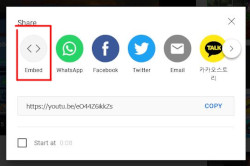
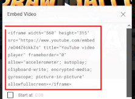

<video width="600" height="400" poster="thumb.jpg" controls>
<source src="Videos/video-bomb.mp4" type="video/mp4">
<source src="Videos/video-bomb.webm" type="video/webm">
<p>O navegador não suporta vídeos.</p>
</video>
Para inserir vídeos que estão dentro do servidor (ou da nossa máquina), utilizamos as tags <video> e </video>, com atributos de largura, width="xxx", e altura, height="xxx" e controls para que o player seja exibido. Entre as duas tags, inserimos o vídeo com a tag <source> e devemos indicar o local do arquivo de vídeo com o atributo src="arquivo.mp4" e específicar qual o formato com o atributo type="video/formato" (HTML suporta três tipos de vídeo: MP4, WebM e OGG). Com isso, já podemos vizualizar o vídeo em nosso site.
<p> antes da tag de fechamento </video> com uma mensagem informando que o navegador não suporta vídeo.width="xxx" e height="xxx" com as dimensões do vídeo. Isso fará com que o navegador reserve o devido espaço na página para a apresentação do vídeo, evitando o redimensionamento da página durante o seu carregamento.width e height para diminuir as dimensões do vídeo, pois ele consumirá os mesmos dados do original para ser exibido.Armazenar os vídeos no próprio servidor pode sair meio caro e até consumir muitos dados dos clientes. Uma ótima solução é utilizar o próprio YouTube para subir seus vídeos e utilizar a opção de embed, nas opções de compartilhar. Ele entrega um código HTML pronto, que é só copiar e colar no código.
 O resultado é esse:
<iframe>, acesse: W3School: HTML iframe Tag